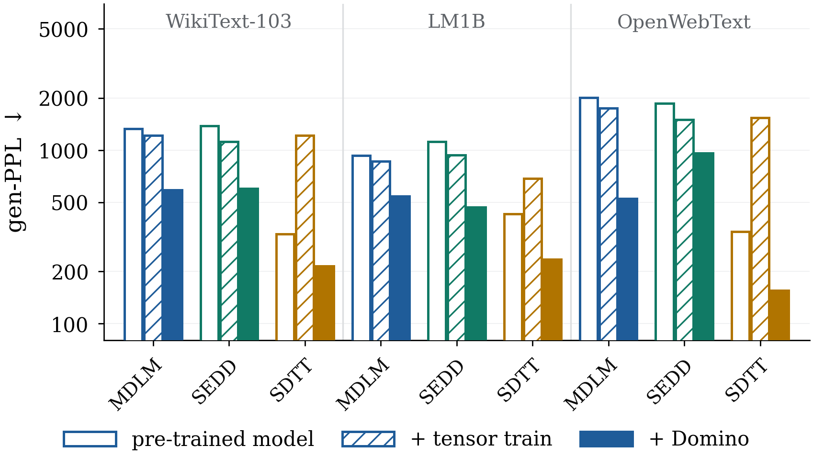
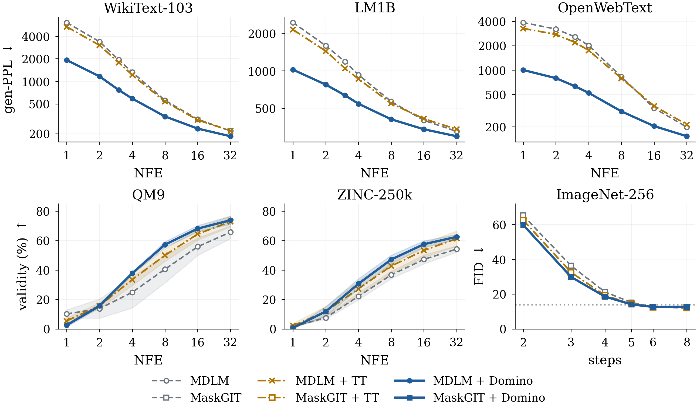
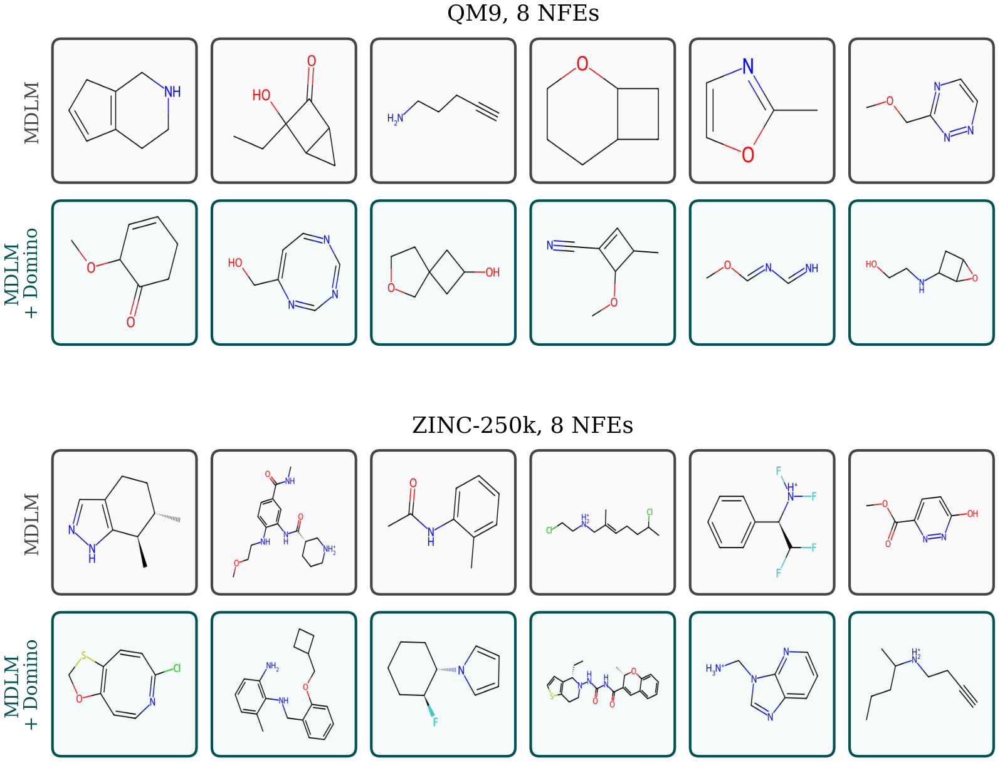
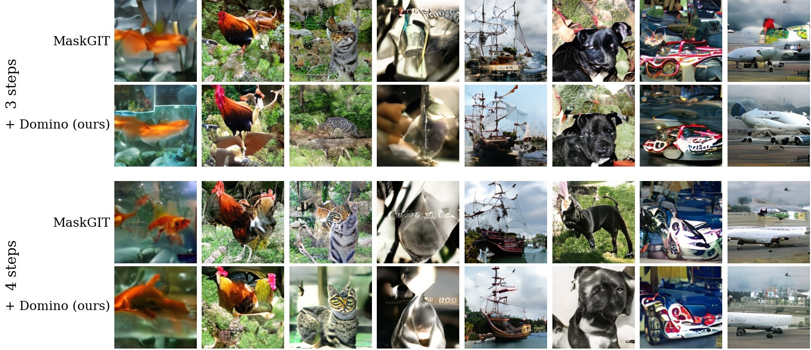

TL;DRA few-step sampler of a masked diffusion model reveals many tokens in each step and draws them independently, so tokens that must agree often do not. Domino keeps the pre-trained model fixed and draws the tokens of each step along a first-order Markov chain over their positions, with transitions computed by a small module from the model's hidden states. At four steps, it lowers the generative perplexity of MDLM by 1.7 to 3.8 times on three text corpora at nearly unchanged entropy, with 2.6% more parameters.
Abstract
Masked diffusion models generate a sequence by revealing masked positions over many denoising steps. A few-step sampler has to reveal many positions at once, but the standard reverse kernel draws them independently and primarily ignores the conditional dependence between tokens revealed in the same step. We propose a novel framework called Domino, which models this dependence with a first-order Markov chain over the revealed positions, given the current state. The first revealed position keeps the posterior of a pre-trained masked diffusion model (MDM), and each subsequent position follows a transition given the token of its predecessor. Notably, the resulting step is normalized by construction, contains the factorized step in MDMs as a special case, and has a likelihood in closed form. We implement the Domino transitions via a lightweight module on the hidden states of a pre-trained MDM denoiser with only 2.6% parameter overhead and train by keeping the MDM denoiser frozen. Our extensive evaluations across text, molecules, and images show that Domino lowers the few-step generative perplexity of MDMs by a factor of 1.7 to 3.8 on One Billion Word (LM1B), WikiText-103, and OpenWebText at nearly unchanged sample entropy. It also raises the validity of few-step molecule samples by 1.5×.
One large step, independent draws
A masked diffusion model generates a sequence by unmasking its positions over many denoising steps. Given the current state $\boldsymbol z_t$, it first chooses the set $S$ of positions that a step reveals, and then draws their tokens independently from the per-position posteriors of its denoiser,
A sampler with few steps has to reveal many positions in each step, and positions revealed together are rarely independent in the data. A subject and its verb must agree, and an opening bracket needs a closing one. Even with exact marginals $q_i$, the product kernel then pays the total correlation of the step,
which grows with the number of positions revealed at once. In the example of Figure 1, the data complete the three revealed positions as A dog barks or Two dogs bark. Each position is then uniform over its two words, the product kernel spreads its mass over all eight combinations, and $\mathrm{TC}(q)=2\log 2$.
A Markov chain within a denoising step
Domino orders the revealed positions $j_1<\dots<j_n$ and draws their tokens as a first-order Markov chain, given the current state. The first position keeps the posterior of the pre-trained denoiser, and each subsequent position follows a transition given the token of its predecessor,
A lightweight module computes each transition from the hidden states $h_i$ of the denoiser. It shifts the denoiser's logits $\ell_j$ by a pairwise potential of rank at most $d_p$, built from the two positions and the gap between them,
Normalized by construction
The step is a product of conditionals, so it sums to one and its likelihood has a closed form.
Contains the factorized step
Transitions that ignore the predecessor recover the product kernel, and the module starts there, since its output layer starts at zero.
Lightweight
The module adds 4.5M parameters to a 170M denoiser, trains in 1.3 H100 hours, and keeps one denoiser pass per step.
Training and sampling algorithms
Algorithm 1 · Domino training
- Draw a clean sequence $\boldsymbol x$ and a step $(t,s)$ of the $K$-step schedule, or with probability $\eta$ a step of random size.
- Mask each token of $\boldsymbol x$ with probability $1-\alpha_t$ to get $\boldsymbol z_t$, and add each masked position to the reveal set $S$ with probability $(\alpha_s-\alpha_t)/(1-\alpha_t)$.
- Run the pre-trained denoiser once on $\boldsymbol z_t$, without gradients, to get $\ell_i$ and $h_i$.
- For each consecutive pair $(j_{m-1},j_m)$ of $S$ in index order, compute $A$ from the two hidden states and their gap, and score the true token $x^{j_m}$ under $\operatorname{softmax}(\ell_{j_m}+E_{x^{j_{m-1}}}^{\top}AE)$, with the true predecessor $x^{j_{m-1}}$.
- Update only the module on the summed negative log-likelihood.
Algorithm 2 · Domino sampling
- Start from the fully masked sequence, and for $k=0,\dots,K-1$ go from $t=1-k/K$ to $s=1-(k+1)/K$.
- Draw the reveal set $S$ among the masked positions, and run the denoiser once on the current state.
- Draw the first position of $S$ from its posterior $\operatorname{softmax}(\ell_{j_1})$.
- Draw each subsequent position from $\operatorname{softmax}(\ell_{j_m}+E_{z^{j_{m-1}}}^{\top}AE)$, given its sampled predecessor $z^{j_{m-1}}$.
What the chain removes
A $K$-step sampler is a generative model of its own, and its negative log-likelihood is bounded by the log-probabilities that its steps assign to the true tokens. In expectation over the data, the bound splits into the entropy of the data and one divergence per step,
For the chain, each of these divergences separates into the error of the best chain, the error of the denoiser at the first position, and the transition error $\varepsilon_\theta$ of the module,
The best chain removes from the total correlation the information that consecutive revealed positions share, and it removes all of it when the step is itself a Markov chain in index order, as in Figure 1. The training loss of Domino is the transition part of this bound, so the module learns the pairwise dependence that the product kernel discards. Its gain shrinks as the number of steps grows, because consecutive revealed positions then lie farther apart and share less information.
Few-step generation
We train the module on pre-trained MDLM and SEDD models and on distilled SDTT students, and compare with a tensor-train joint layer of similar size (TTD). At four function evaluations (NFEs), Domino lowers the generative perplexity of MDLM by 2.3 times on WikiText-103, 1.7 times on LM1B and 3.8 times on OpenWebText, while the per-position entropy stays close to that of held-out text. MAUVE rises from 0.05 to 0.29 on WikiText-103 and from 0.06 to 0.31 on LM1B.

| gen-PPL at 4 NFEs | WikiText-103 | LM1B | OpenWebText |
|---|---|---|---|
| MDLM | 1328 | 931 | 2007 |
| + TTD | 1218 | 861 | 1749 |
| + Domino | 589 | 543 | 524 |
| SEDD | 1382 | 1117 | 1856 |
| + TTD | 1122 | 934 | 1496 |
| + Domino | 601 | 470 | 964 |
| SDTT | 328 | 428 | 339 |
| + TTD | 1212 | 685 | 1540 |
| + Domino, temperature 0.9 | 214 | 235 | 155 |
Lower is better. Distilled SDTT students reach low perplexity by narrowing their samples. Domino restores their entropy, and at a temperature of 0.9, which brings the entropy back to that of the student, it lowers the student's perplexity by 1.5 to 2.2 times. The paper reports all NFEs from 1 to 32, the entropies, MAUVE and DUO.

Molecules and images
A SMILES string parses only when its ring-closure digits pair up and its parentheses balance, so positions revealed in the same step are tightly coupled. At four NFEs, Domino raises the validity of MDLM from 24.8% to 37.8% on QM9 and from 22.1% to 30.6% on ZINC-250k, and it lowers the Fréchet ChemNet distance (FCD) on both.
| QM9 validity at 4 NFEs | QM9 FCD at 32 NFEs | ZINC-250k validity at 4 NFEs | ZINC-250k FCD at 32 NFEs | |
|---|---|---|---|---|
| MDLM | 24.8 ± 10.6 | 1.36 | 22.1 ± 2.4 | 6.35 |
| + TTD | 33.4 ± 4.0 | 1.52 | 27.2 ± 5.1 | 7.67 |
| + Domino | 37.8 ± 0.8 | 1.18 | 30.6 ± 3.4 | 5.42 |
Validity in percent (higher is better) over three training runs, FCD lower is better.

On ImageNet-256, we integrate Domino into the official MaskGIT checkpoint. We keep MaskGIT's own confidence-based sampler and let the chain revise its candidates through a maximal coupling, as in speculative decoding. Domino lowers FID at 2 to 5 steps, and MaskGIT catches up from 6 steps onwards.
| FID on 10,000 samples | 2 steps | 3 steps | 4 steps | 5 steps | 6 steps | 8 steps |
|---|---|---|---|---|---|---|
| MaskGIT | 65.24 | 36.29 | 21.21 | 15.17 | 12.66 | 11.91 |
| + TTD | 62.60 | 32.52 | 19.25 | 14.34 | 12.48 | 12.30 |
| + Domino | 59.83 | 29.87 | 18.53 | 14.05 | 12.61 | 12.67 |

Agreement within one step
To test the failure of Figure 1 on real text, we place the subject-verb items of BLiMP in held-out text, mask both the subject and its verb, and let a model fill them in one network call. The agreement share is the joint probability of the grammatical pair relative to the ungrammatical one, so chance is 50%. MDLM stays near chance, while Domino closes about 40% of the gap to a two-call reference on WikiText-103 and LM1B and 58% on OpenWebText.
| mean agreement (%) | WikiText-103 | LM1B | OpenWebText |
|---|---|---|---|
| MDLM, one call | 46.0 | 46.6 | 47.7 |
| Domino, one call | 53.3 | 55.5 | 60.8 |
| two calls (reference) | 65.0 | 70.2 | 70.1 |
Cost
The module adds 4.5M parameters to a denoiser of 170M and trains in 1.3 H100 hours, about 6% of the training time of MDLM. Its sequential transitions add 58% to the sampling time of MDLM at 4 NFEs and 6% at 32 NFEs, where the denoiser passes dominate.
| WikiText-103 | trainable parameters | training (H100 hours) | sampling at 4 NFEs (ms) | sampling at 32 NFEs (ms) |
|---|---|---|---|---|
| MDLM | 170.2M | 22.5 | 2.0 | 15.9 |
| MDLM + TTD | 3.5M | 5.3 | 12.5 | 83.5 |
| MDLM + Domino | 4.5M | 1.3 | 3.2 | 17.0 |
Sampling time per sequence at a batch of 32 on one H100.
Example generations
We draw pairs of samples from MDLM and from MDLM with Domino under the same reveal schedule, so the two differ only in how the tokens of each step are drawn. A token is shown in red when GPT-2 Large finds it more surprising than nine in ten tokens of held-out text from the same corpus.
One sample through its four steps
LM1B at 4 NFEs. Gray squares are positions that are not yet revealed.
Paired samples
BibTeX
@article{ahmed2026domino,
title = {Domino: Joint Unmasking via First-order Markov Chain for Few-Step Masked Diffusion},
author = {Ahmed, Mansoor and Chebbah, Lilia and Dinh, Jenny and Patterson, Murray and Venkateswara, Hemanth},
journal = {arXiv preprint},
year = {2026}
}